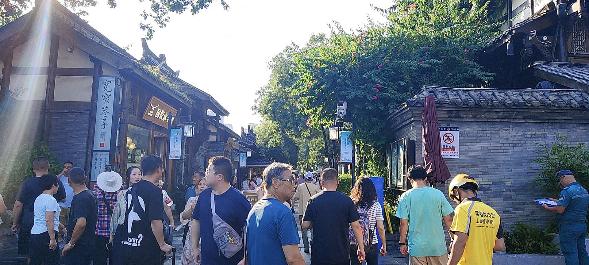
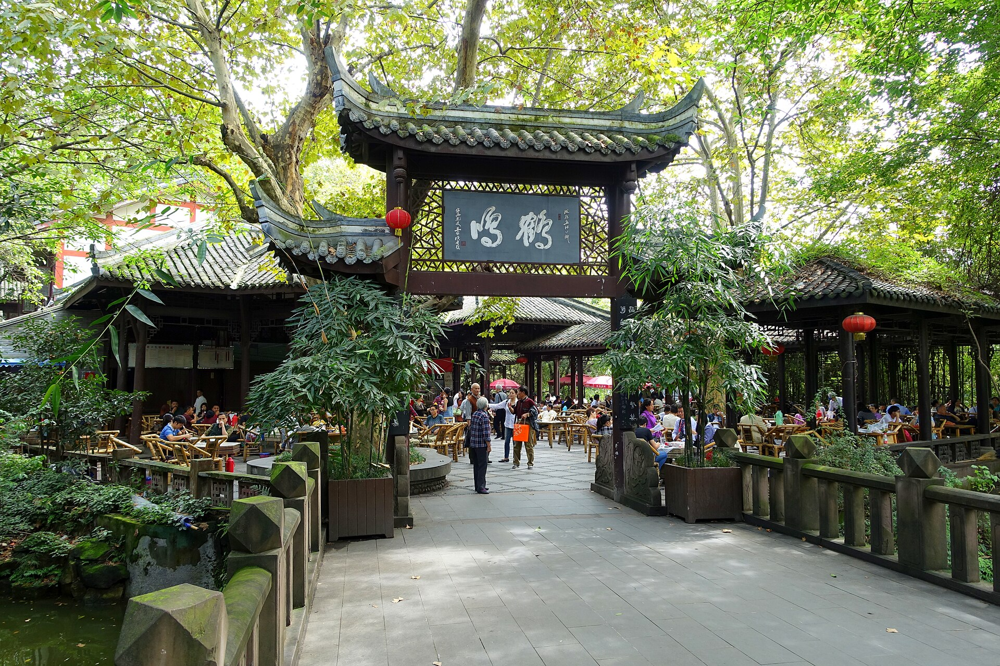
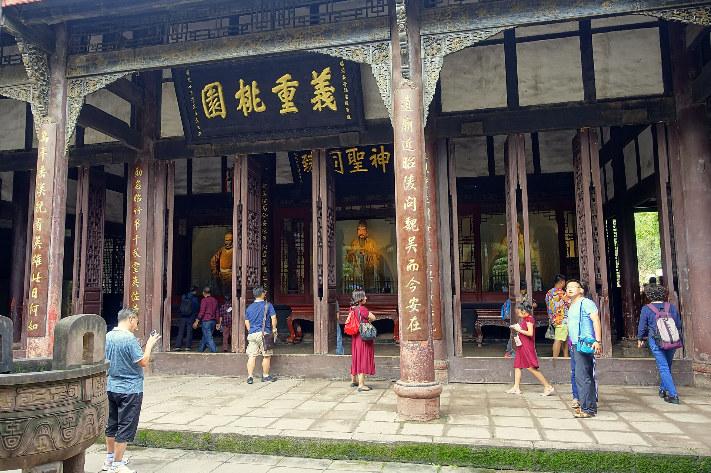
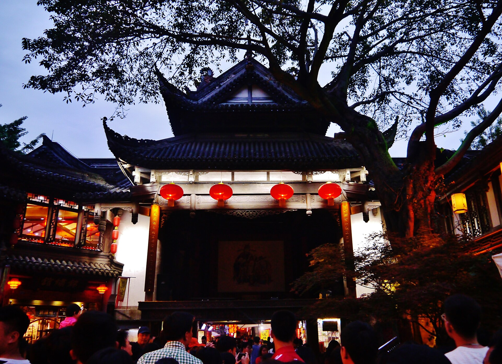
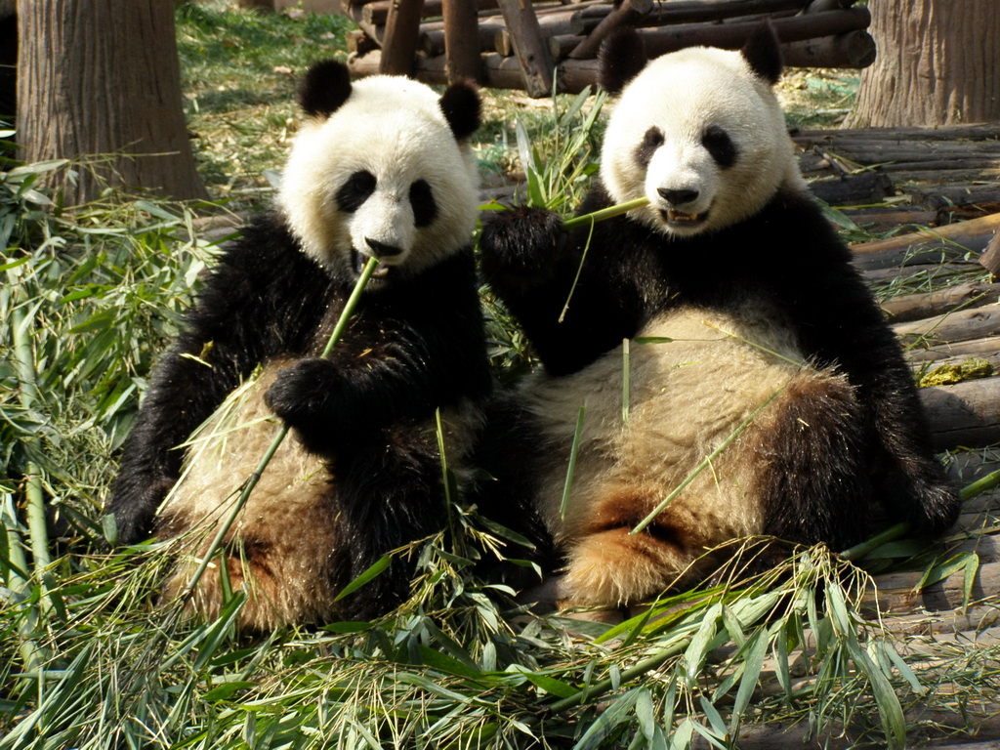
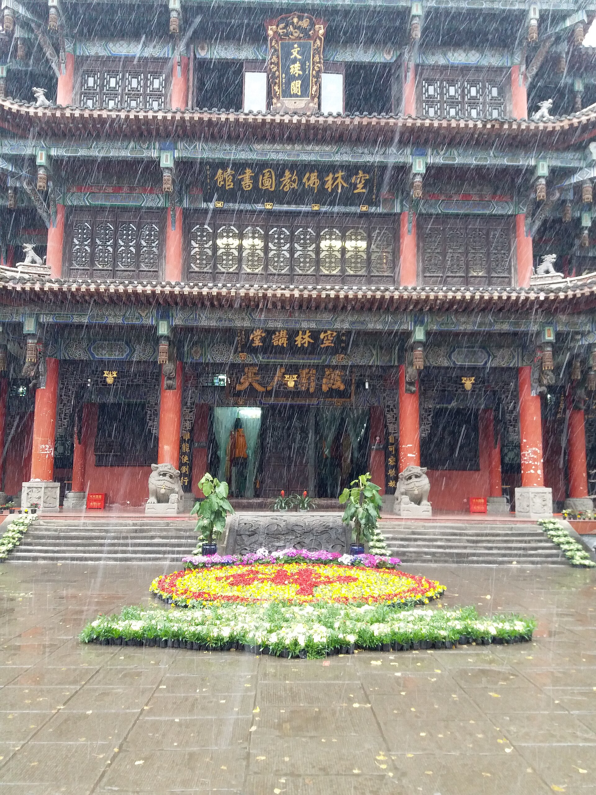
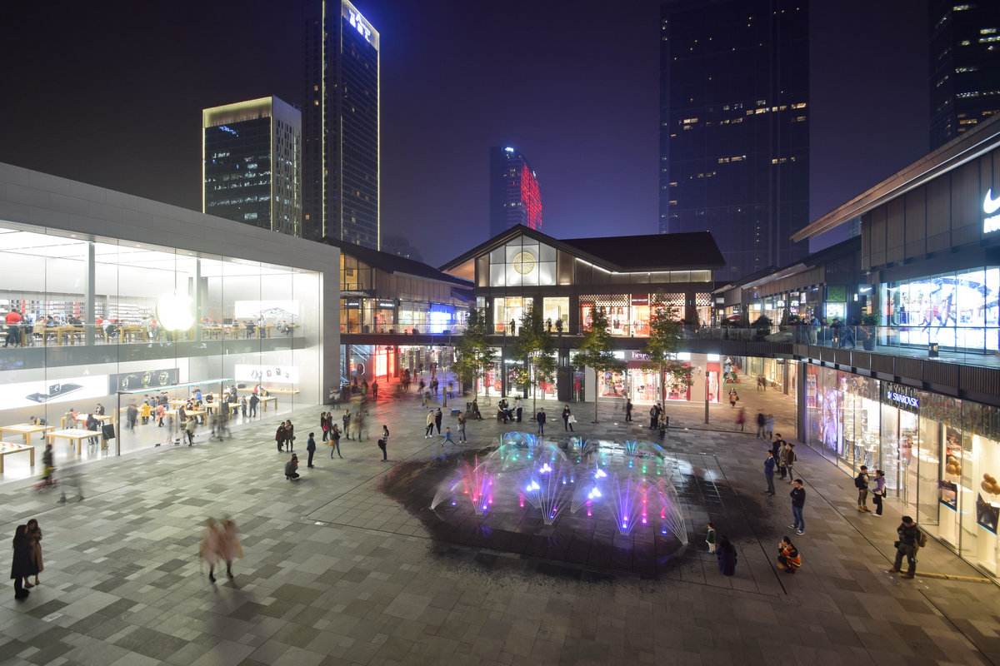
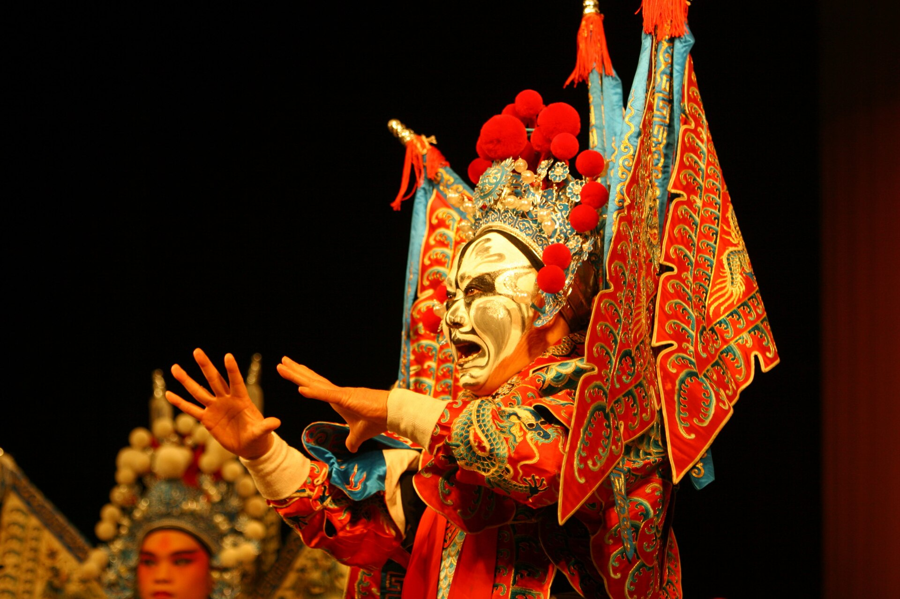
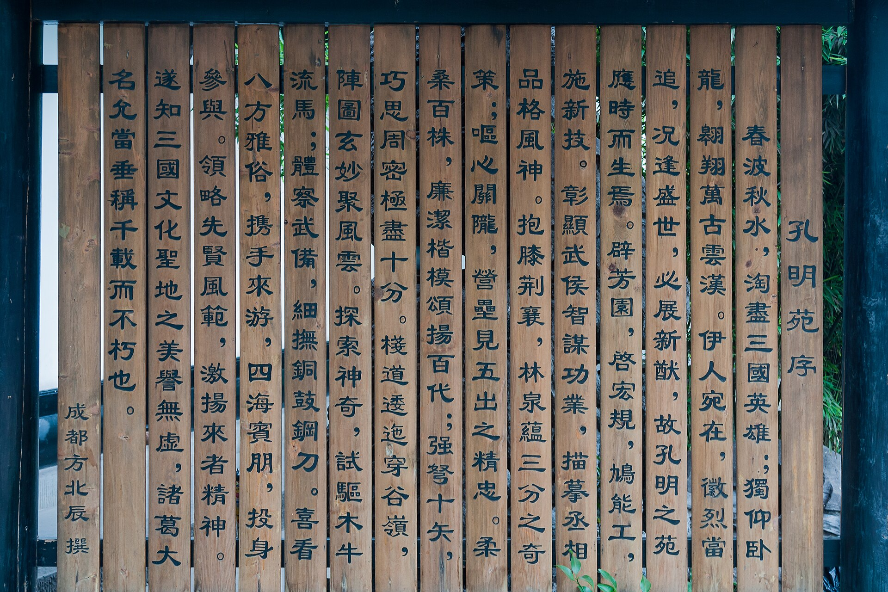
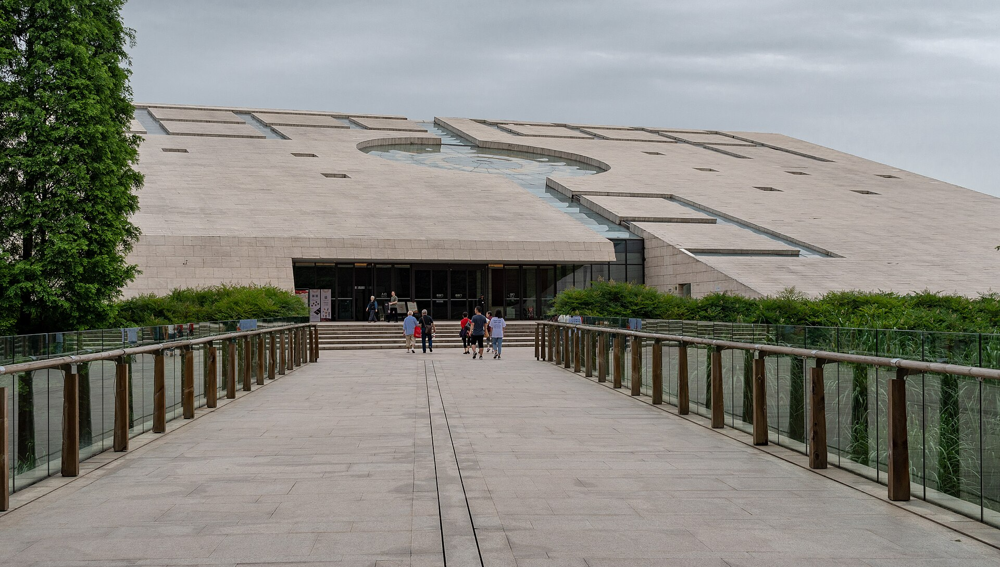

行程速览
三天一条城—山—史的线：第一天泡进老成都的慢生活，第二天留给熊猫与川剧，第三天从杜甫草堂读到金沙古蜀。地铁贯通全程，节奏以"喝茶"为准。
Day 1 · 落地就开始喝茶
关键词：宽窄巷子、盖碗茶、锦里的灯。第一天不设硬性目标，按老成都的节奏把"慢"学个入门。
怎么去成都（上海出发）
上海浦东 / 虹桥 → 成都天府（TFU）或双流（CTU），约 3–3.5 小时，票价随季节波动大（约 ¥500–1500），提前 2–3 周出票更划算。天府机场离市区远，落地后地铁 18 号线约 40 分钟进中心；双流更近。
上海虹桥 → 成都东，最快约 8 小时上下、二等座约 900 元起（以 12306 为准）。不适合赶时间，但若想把沿江山川当风景看，也可以把车程本身当行程。
地铁 1–18 号线覆盖全部行程点，天府通 / 支付宝乘车码通用；市区内共享单车极方便，茶馆与火锅店之间的路程，骑行刚刚好。

从巷子到茶馆，再到锦里的灯



Day 2 · 熊猫的早餐与一场变脸
关键词：赶早看熊猫吃笋、文殊院的禅意、太古里的夜。第二天是"萌"与"酷"的双重暴击。
从滚滚的早餐到川剧的锣鼓




Day 3 · 从诗圣的茅屋到古蜀的太阳
关键词：杜甫草堂、金沙遗址。最后一天从唐代诗歌走进三千年前的古蜀文明，午后从容返程。
一茅屋，一太阳神鸟


住在哪里
成都住哪儿都不亏，重点是住进一种生活方式：要么商圈热闹，要么巷子市井。价格为常规参考区间，以预订平台实时价为准。
春熙路商圈酒店
地铁枢纽 + 商业核心，逛吃买一体，去熊猫基地、宽窄巷子都是直线地铁。第一次来成都最省心的选择。
少城街巷民宿
住在清代街巷旁的院落民宿，早晨去人民公园喝头道茶，晚上宽窄巷子散步回家——把"慢"住进行程里。
玉林社区酒店
《成都》唱的那条玉林路：苍蝇馆子密度全市最高，晚上小酒馆坐坐，体验最本地的市井生活。
锦里周边精品酒店
推窗就是锦里的灯笼，晚上散场步行即回，第二天上熊猫基地动线也顺。适合想"夜夜有灯会"的浪漫派。
成都味道
成都的美食哲学是"麻辣之外还有百味"：红油只是序章，甜水面、蛋烘糕、冰粉才是隐藏菜单。照着吃不会错。
三大炮的"砰砰"声、糖油果子的焦糖香、伤心凉粉的辣——成都的小吃江湖，从锦里开始入门（真实照片 · 锦里）。
火锅九宫格
牛油锅底是灵魂：毛肚七上八下、鸭肠涮三秒。老字号与社区店各有拥趸，本地人认人多的巷子店。
串串香冷锅 · 油卤
竹签当筷子的火锅平替，按签计数结账；冷锅串串适合怕油烟的夏天。
钟水饺老字号
纯肉馅水饺淋红油甜蒜汁，咸甜辣三味一体，是川味小吃的教科书。
龙抄手老字号
皮薄如绢的馄饨，清汤红油双拼——老成都的早餐记忆。
担担面挑担而来
一碗一两的香辣碎肉面，花生碎与芽菜提香，经典程度无需解释。
甜水面文殊院旁
筷子粗的面条淋红糖甜酱与红油，甜辣交织——口感冲击最大的一碗。
蛋烘糕街头全民小吃
小铜锅烘出松软蛋皮，夹奶油、肉松或火锅粉，成都人的"可丽饼"，两三块钱的幸福。
三大炮锦里
糯米团摔向铜盘"砰砰砰"三响，裹黄豆粉淋红糖——听个响，吃个甜。
冒菜一个人的火锅
竹篓烫菜浇红油汤底，荤素自选——独自旅行的午餐最优解。
钵钵鸡乐山来的宝贝
藤椒与红油两种口味的冷串串，签签好吃到停不下来，配冰粉绝配。
兔头双流老妈
五香味与麻辣味，"啃兔头"是成都人的夜宵仪式——第一次吃照着本地人啃就对。
冰粉解辣神器
手搓冰粉配红糖、山楂、花生碎，火锅标配的温柔收尾。
本地觅食圣地：冒椒火辣、甜水面与咖啡馆同街共处。
苍蝇馆子密度之王，小酒馆的《成都》唱的就是这里。
电子科大学生带火的夜市街，烤脑花、锅盔、冰粉一条龙。
游客友好度最高的小吃带，第一晚与最后一晚都在这收尾。
实用贴士
日期待定的成都之旅，功课重点是熊猫票、川剧票和"辣度管理"：
熊猫基地赶早
官方渠道实名预约购票，旺季提前 1–3 天；开园（约 7:30–8:00，以官方公告为准）即入，先冲月亮产房；10 点后熊猫普遍睡觉，下午去体验大打折扣。
川剧票提前订
蜀风雅韵、芙蓉国粹等演出每周场次有限，旺季前 1–3 天线上订票；选中排居中，变脸细节全靠眼神。看演出前先吃火锅，行程刚好接上。
季节选择
3–6 月与 9–11 月最舒适；夏季闷热（但熊猫是恒温"外套"不怕热看），冬季湿冷无暖气。若逢雨季，茶馆与博物馆就是最好的雨天方案。
吃辣管理
点辣前先报"微辣"，川渝的微辣≈外地的特辣；鸳鸯锅、油碟加醋都是通行做法；随身备一瓶藿香正气液或健胃消食片，肠胃先行。
交通要点
天府机场离市区远（地铁 18 号线约 40 分钟），买机票看清机场；市区地铁 + 共享单车组合足够；早晚高峰打车溢价，地铁更稳。
节奏与延伸
成都的正确节奏是"上午一个景点，下午一顿茶"——别排太满；时间富余强烈推荐加都江堰 + 青城山一天；返程预留天府机场 2 小时、双流机场 1.5 小时。